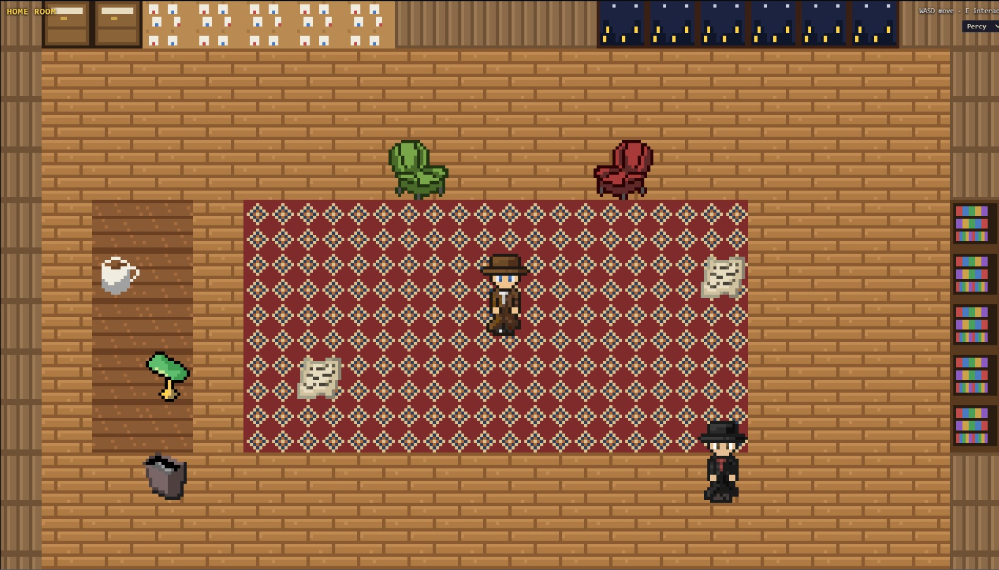
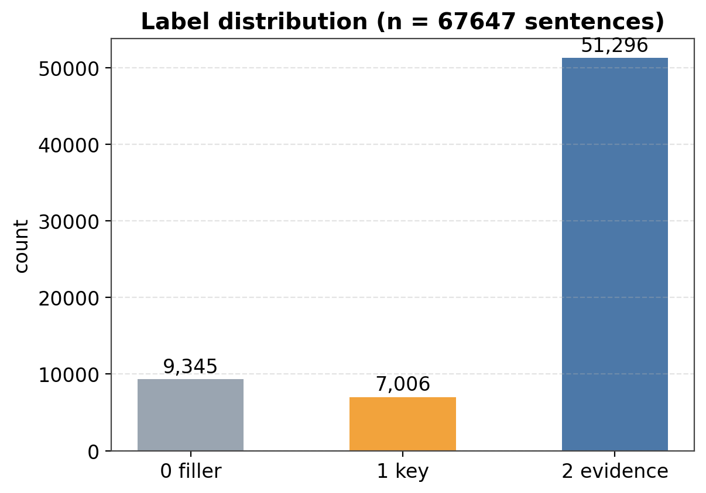
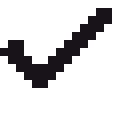
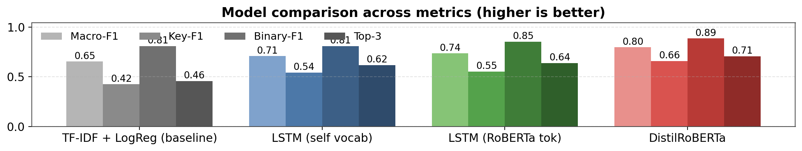
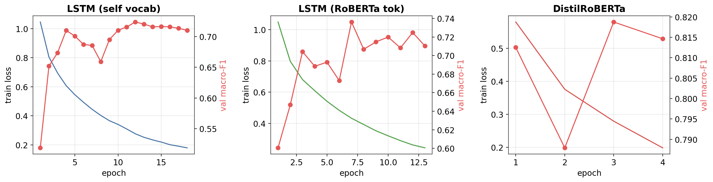
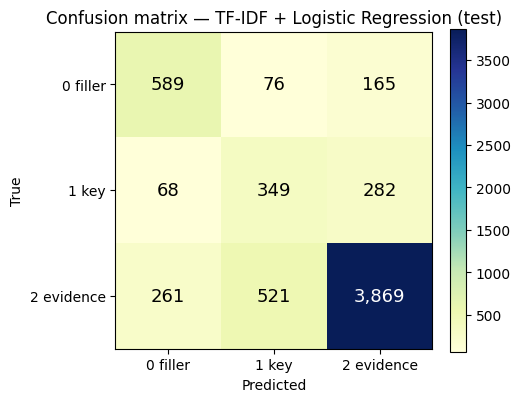

PIXEL ISLE
PLAYABLE DETECTIVE MYSTERY
A classical NLP pipeline that ranks the sentences that matter, then rewrites them as clues in a daily murder mystery.
MACHINE LEARNING IN EDUCATION
GROUP 2 // CHIU WAI YIU · LAI CHUN KUI · LAI WAN YAU SONYA · MAK TSUN WAI MARSIO
WONG CHING WAI · WONG SUI KI · WONG TSZ CHING // 18 NOV 2026
CHOOSE A CHAPTER
THE PROBLEM
News is competing with games. Right now, games are winning.
THE GAME
A browser detective mystery built from today's news.
THE PIPELINE
Crawl, clean, label, train, rank, rewrite, inject.
THE RESULTS
Model comparison, limits, and what we learned.
THE PROBLEM
News is competing with games.
Right now, games are winning.
NEWS FEELS LIKE HOMEWORK
Long sentences and unfamiliar words block the story.
Reading feels like a task, not something you choose.
Too many stories, too little signal about what matters.
WHAT IF THE NEWS WAS THE GAME?
READ MORE NEWS
A daily reason to open a real story.
BUILD INTEREST
Curiosity first; comprehension follows.
TRAIN CRITICAL THINKING
Weigh evidence, then explain the death.
TODAY'S NEWS
A real BBC story
MODEL RANKS
Key sentences survive
5 CLUES
Rewritten for the case
PIXEL ISLE
A mystery to solve
THE GAME
A murder mystery you can play
in a browser.
INSPECT. COLLECT. ACCUSE.

5 objects = 5 MCQs.
Finale = explain the death.
Score = answers + keywords.
THE PIPELINE
Real news in.
Playable clues out.
FROM RSS TO MURDER SCENE
COLLECT
30+ RSS feeds
CLEAN + SPLIT
articles -> sentences
LABEL
0 filler / 1 key / 2 evidence
TRAIN
TF-IDF + Logistic Regression
RANK
P(key) for every sentence
REWRITE
top sentences -> clues
INJECT
clues -> case_data.js
PLAY
inspect, answer, score
THE CASE FILE: 67,647 SENTENCES
Dataset: today's news from BBC, CNN, The Guardian and 30+ public RSS feeds.
Article-level split: 80% train / 10% validation / 10% test.

CLEAN TEXT IN, USEFUL SIGNALS OUT
- Strip HTML tags and unescape entities
- Normalize whitespace; trim excessive ellipses
- Drop articles <50 chars, sentences <15
- Split sentences with abbreviation awareness
- Deduplicate articles by content hash
- TF-IDF unigrams + bigrams
- min_df=2, sublinear_tf=True
- Sentence position + neighbouring sentences
- Article-level 80 / 10 / 10 split
- class_weight='balanced' for imbalance
<p>Breaking news analysis...</p>Breaking news analysis...THREE LABELS, ONE QUESTION
FILLER
Stylistic, transitional, optional. Cut it and the story still stands.
KEY
Main topic, central events, core facts. This is the story.
EVIDENCE
Secondary but useful context: quotes, numbers, background.
unigrams + bigrams
min_df=2, sublinear_tf
LogisticRegression
balanced, max_iter=2000
rank sentences by P(key)
for clue selection
WHY TF-IDF + LOGISTIC REGRESSION

MODEL CARD
- FEATURES
- TF-IDF, 1-2 grams
- MIN_DF
- 2
- SUBLINEAR_TF
- True
- CLASS_WEIGHT
- balanced
- MAX_ITER
- 2000
- BASELINE
- classical, no deep learning
A FAIR FIGHT: SAME SPLIT, SAME METRICS
Learn model parameters.
Check performance during development.
Report final performance once.
SEED = 42
REAL NEWS, USED RESPONSIBLY
- One real story per day from public RSS feeds (BBC, CNN, The Guardian).
- Content is current, real-world news — not fabricated.
- We keep short sentence excerpts, not full republished articles.
- Non-commercial, classroom prototype within a university course.
- BBC and other outlets are copyrighted, not open-source.
- RSS is for personal reading; brief excerpts are low-risk in a student prototype.
- We do not redistribute full articles or claim ownership.
- Any public demo uses the shortest excerpts and credits the source.
THE RESULTS
The model ranks.
The numbers decide.
MODEL COMPARISON: THE NUMBERS
| METHOD | MACRO-F1 | KEY-F1 | TOP-3 | TIME | PARAMS |
|---|---|---|---|---|---|
| TF-IDF + Logistic Regression (baseline) | 0.653 | 0.424 | 0.455 | <1 min | 0.39M |
| LSTM + self-built vocab | 0.709 | 0.543 | 0.618 | 8.5 min | 5.2M |
| LSTM + RoBERTa tokenizer | 0.736 | 0.552 | 0.638 | 7.8 min | 6.7M |
| >> DistilRoBERTa (reference) | 0.806 | 0.673 | 0.693 | 21 min | 82.1M |

TRAINING CURVE: WHAT TO WATCH

WHERE THE MODEL STILL STRUGGLES

- Key sentences are hardest. They are rare and sit between filler and evidence, so they are easy to confuse.
- Labels are noisy. DeepSeek-assisted labels can be wrong, so scores absorb label error.
- Class imbalance. Filler dominates; balanced weights help, but do not erase the problem.
- Next step. Inspect top false positives and false negatives, then refine the label guide.
WHAT THE RESULTS SHOW
DistilRoBERTa: 0.806 macro-F1 and 0.673 key-F1.
82.1M parameters vs 5.2M / 6.7M for the LSTM runs.
DeepSeek-assisted labels may contain errors that move scores.
Single seed; measures sentence classification, not learning gains.
SO WHAT? PROBLEM -> RESULT
EXTRACT
The game pulls key sentences from a real BBC story.
CLASSIFY
The model ranks importance: filler, key, evidence.
UNDERSTAND
Kids meet the story one clue at a time.
WANT MORE
Current affairs becomes something to play.
Bored by news. Rarely reads it.
Curious. Plays the story daily.
CHALLENGES FACED
LARGE-SCALE LABELLING
67,647 sentences. 'Important' is hard to define. LLM-assisted labels brought noise and imbalance.
COURSE VS PERFORMANCE
The course focuses on classical ML. The best scores came from DistilRoBERTa, so lighter models were also trained for a fair comparison.
MODEL OUTPUT -> CLUES
Raw news sentences do not fit a murder mystery. A rewrite step is needed; early clues broke immersion.
ENGINEERING + REPRO
Crawler, labelling, training, Streamlit and the game had to work together. RSS changes broke the pipeline.
WHAT THE TEAM LEARNED
Pipeline quality beats any single model.
Report both stronger and lighter models.
NLP output must be adapted to the target domain.
Fixed seed + identical splits = fair comparison.
Clear interfaces prevent integration pain.
The last mile is hardest: predictions -> usable clues.
LIMITATIONS & NEXT STEPS
- Single seed (42) — no stability study yet.
- LLM-assisted labels introduce noise.
- Scores measure sentence importance, not learning gains.
- Make the clues more directly related to the story.
- Add student history and daily streaks for engagement.
- Sharpen the news-to-clue mapping (currently not fully focused).
SEVEN ROLES, ONE CASE
Scope, schedule, integration.
Pixel game, scenes, mechanics.
RSS fetch, clean, label, merge.
Baseline + neural models, eval.
Editor, HUD, presentation UI.
Pipeline tests, bug hunting.
Slides, report, live demo.
CASE CLOSED.
Today's news becomes tomorrow's mystery.
WONG CHING WAI · WONG SUI KI · WONG TSZ CHING // INT4096 · 2026-27 SEM 1
REFERENCES (APA 7TH)
Liu, Y., Ott, M., Goyal, N., Du, J., Joshi, M., Chen, D., Levy, O., Lewis, M., Zettlemoyer, L., & Stoyanov, V. (2019). RoBERTa: A robustly optimized BERT pretraining approach. arXiv:1907.11692.
Media Technology Monitor. (2024). News Alert, 09-05-2024. https://mtm-otm.ca/
Pedregosa, F., et al. (2011). Scikit-learn: Machine learning in Python. Journal of Machine Learning Research, 12, 2825–2830.
Sanh, V., Debut, L., Chaumond, J., & Wolf, T. (2019). DistilBERT, a distilled version of BERT: Smaller, faster, cheaper and lighter. arXiv:1910.01108.
Wolf, T., et al. (2020). Transformers: State-of-the-art natural language processing. arXiv:1910.03771.